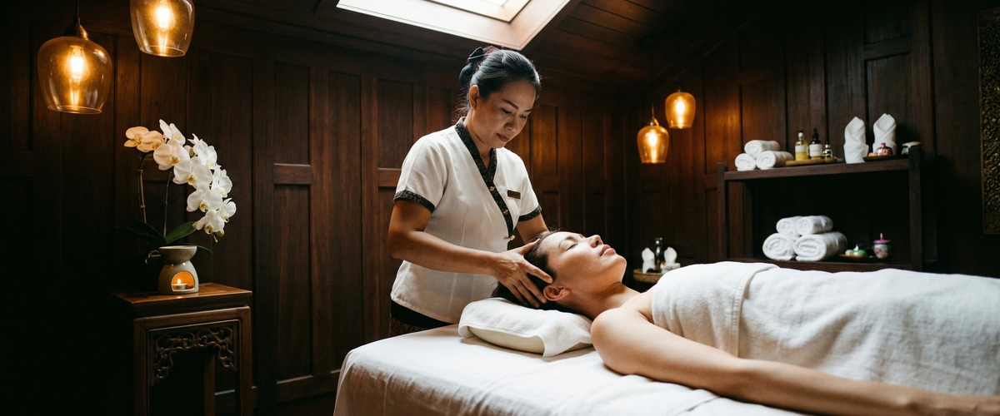
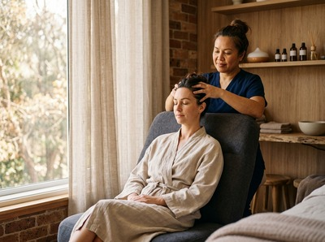

If you're living with frequent headaches or migraines, you'll know how quickly they can derail a day.

The throbbing pressure, the sensitivity to light, the neck and shoulder tension that seems to tighten with every hour. Massage for headaches and migraines is one of the most consistently supported non-drug approaches available, and at Thai Massage Greenock we see first-hand the difference that targeted, skilled treatment makes.
Headaches and migraines are not the same condition. Headaches come in several types, from tension headaches caused by muscle tightness and stress, to cluster headaches and sinus headaches. Tension headaches are the most common.

They feel like a dull, pressing band across both sides of the head.
Migraine is a neurological condition. It causes moderate-to-severe pain, usually on one side of the head, and often brings nausea, light sensitivity, and sound sensitivity with it. Attacks can last anywhere from four to 72 hours.
Common triggers include stress, poor sleep, hormonal changes, and tension in the neck and upper back. Around one in seven people in the UK live with migraines, making it one of the most widespread neurological conditions in the country.
Tension in the neck, shoulders, and upper back is a key driver of both tension headaches and migraines. Massage works by releasing that tension directly. It improves blood flow to tight tissues and lowers the stress hormones that act as triggers.
A randomised controlled trial on massage therapy for migraine found that participants who received massage showed greater improvements in both migraine frequency and sleep quality than those in the control group.
Research on Thai traditional massage has produced strong results too. A clinical study in the Journal of Alternative and Complementary Medicine found that Thai massage raised pain tolerance and reduced headache intensity in people with chronic tension-type and migraine headaches across nine weeks of follow-up. The results held at both the three-week and nine-week checks.
That points to lasting benefit, not just short-term relief.
At Thai Massage Greenock, the most relevant treatments for headache and migraine clients are Traditional Thai Massage, Thai Oil Massage, and Thai Facial Massage. Traditional Thai Massage uses acupressure and assisted stretching along sen energy lines to release tension through the upper body. Thai Oil Massage combines flowing strokes with targeted pressure on the neck, shoulders, and upper back.
Thai Facial Massage focuses on the face, head, and neck, and can offer direct relief during tension-related episodes. You can book your session online and note your symptoms so the treatment can be shaped around them.
Every session at Thai Massage Greenock begins with a conversation. Jariya takes detailed notes on what you're experiencing: where the pain sits, how often headaches occur, what tends to trigger them, and how your neck and shoulders feel day to day. This isn't a one-size-fits-all treatment.
The session is shaped around what your body is telling her.
For headache and migraine clients, Jariya typically focuses on the muscles at the base of the skull, across the upper back and shoulders, and along the sides of the neck. These are the areas most closely linked to referred head pain. Book your appointment at our studio on South Street in Greenock, easily reached from across Inverclyde.
Anyone with regular headaches or migraines can benefit from massage therapy. It tends to work especially well for desk-based workers who carry tension in their neck and shoulders all day, people whose migraines are triggered by stress, those with poor posture from long hours at a screen, and anyone looking to rely less on painkillers.
If headaches are a regular part of your week, they don't have to be. Get in touch and book a session to start working on the cause rather than just the symptoms.
Research suggests it can. A controlled trial found that people who received massage saw greater improvements in migraine frequency than those who didn't. Regular sessions targeting neck and shoulder tension appear to build benefit over time. It's not just short-term relief.
It depends on the person. Some people find gentle massage to the neck, head, or feet helpful during an attack. Others are too sensitive to tolerate it. For most clients, massage works better as a way to prevent episodes than to treat them in the moment. Always let your therapist know if you're in the middle of an attack so the session can be adjusted.
Both Traditional Thai Massage and Thai Oil Massage work well for tension headaches. Both target the neck, shoulder, and upper back muscles that cause referred head pain. Thai Facial Massage is a good option when tension is focused around the temples or the base of the skull.
Many clients feel some improvement after a single session, especially in neck and shoulder tension. Clinical research on Thai traditional massage found clear reductions in headache intensity after nine sessions over three weeks. For ongoing or frequent headaches, a regular treatment schedule tends to give the best results.
Yes. Stress is one of the most common migraine triggers. Massage has a well-documented effect on stress hormones, including cortisol. By addressing muscle tension and nervous system activity, regular massage can reduce the chance of stress-triggered episodes over time.
No referral is needed. You can book directly through our online booking form. If you have a diagnosed neurological condition or take migraine medication, mention it when you book. That way Jariya can tailor your session from the start.